Home Page Erling Haaland page Email Manchester City
Manchester City 1894
Home Of Four In A Row Champions!
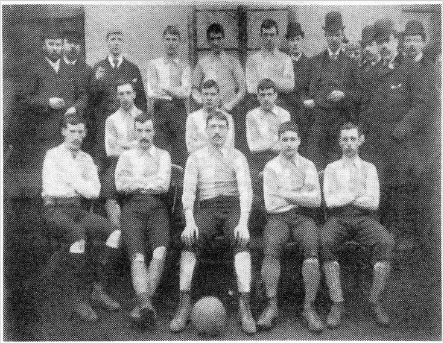
Manchester City early years
In 1880 St Marks church formed an evolving team known as Ardwick AFC. By 1894 the club changed its name to Manchester City, two years later they became founded members of the football league. Manchester City joined first division in 1889 in which they won their first of seven second tier league titles and became the first Manchester side to win major, lifting the FA cup in 1904. It took a further 30 years to do so again.
Joe mercer with assistant coach Malcolm Allison won first division again in 1967 – 68. A year later the FA cup. They went on to win the League cup and European Cup in 1970. At this time Manchester City’s home for 80 years was on Maine Road, Manchester. In 2003 Manchester City’s new home was the Etihad stadium on Rowsley street Manchester. Sheikh Mansour bought Manchester City in September 2008. In which the club was positioned ninth in the Premier League.
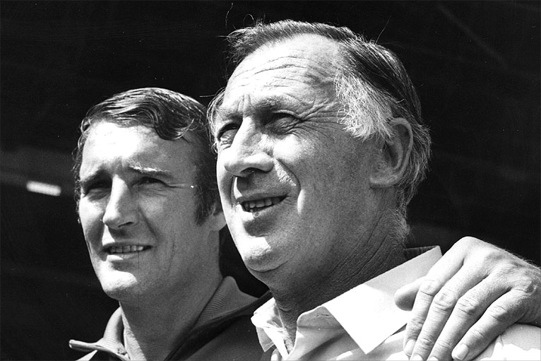What is a football league you might ask?
A football league is an association of clubs that organize matches between membered teams. This was known as the first division from 1991-92 when all of it's teams were formed into the Premier League.
Who is Sheikh Mansour?
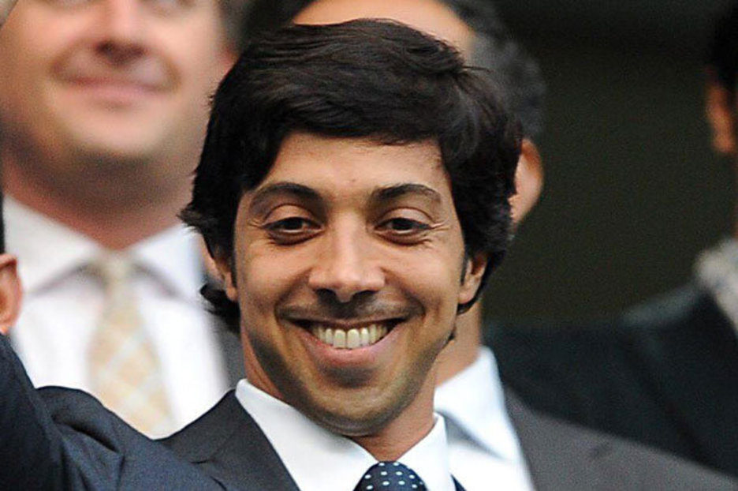Sheikh Mansour is a billionaire who is the current vice president and deputy prime minister of the United Arab Emirates aswel as a ruling family member of Abu Dhabi.
www.ManchesterCity.comwww.Bluemoon-mcfc.co.uk
www.cityfootballgroup.com
Did you know?
Since the take over of the club by the Abu Dhabi United Group, Manchester City have Four Premier Leagues, an FA Cup, three League Cups and some of the highest rated players on the team.
A Timeline of Manchester City
| YEAR | ACCOMPLISHMENTS |
|---|---|
| 2000 | City returns to the Premiership. A victory against Blackburn had the pitch invaded by City fans. |
| 2002 | Stuart Pearce captains City, locking in a record of most goals and points gained in a season. |
| 2003 | City say farewell to Maine Road with their last match at the Manchester Stadium against Southampton. |
| 2007 | Sven Goran Eriksson replaces Stuart Pearce and leads with a nine straight home league wins record. |
| 2008 | Abu Dhabi United Group take ownership of Manchester City. Mark Hughes becomes cities new manager. |
| 2009 | Former manager of Inter Milan, Roberto Mancini, replaces Mark Hughes. |
| 2010 | The blues finish 5th in the Premier League qualifying for Europa League aswel as reaching the League Cup semi-finals. |
| 2011 | City beat Stoke and lift the FA Cup qualifying for the 2011/12 Champions League. |
| 2012 | City win League Championship after 44 years. |
| 2013 | Manuel Pellegrini is the new manager at city. |
| 2014 | City wins against Sunderland earning the clubs first win in League Cup since 1976. |
| 2016 | City win League Cup for a second time in three seasons. Announcement of Pep Guardiola to replace existing manager Pellegrini. |
| 2018 | City beat Arsenal and win Carabao Cup. |
| 2019 | City beat Chelsea winning the Carabao Cup. City beat Brighton in Premier League and are announced Champions. City win FA Cup with a win over Watford. |
| 2020 | City win League Cup over Aston Villa. |
| 2021 | City win Premier League and League Cup. |
| 2022 | City claim another Premier League title. |
| 2023 | City win another Premier League title followed by an FA Cup. For the first time in club history they won the Champions League Trophy. City went on to win UEFA Super Cup and FIFA World Cup announcing them as The Best Team In The World And All The Land. |
The Four In Row Championship Year
- 2023-2024:
Winner: Manchester City Runners Up: Arsenal - 2022-2023:
Winner: Manchester City Runners Up: Arsenal - 2021-2022:
Winner: Manchester City Runners Up: Liverpool - 2020-2021:
Winner: Manchester City Runners Up: Manchester United
The Club So Far Have Won
- 10 League titles
- 7 FA Cups
- 8 League cups
- 7 FA Community Shields
- 1 UEFA Champions League
- 1 European Cup Winner’s Cup
- 1 UEFA Super Cup
- 1 FIFA Club World Cup
League's & Cups
- PREMIER LEAGUE:
- The highest English football league system. The system runs off promotion and relegation with EFL. It has 20 clubs. The season runs from August to May with 38 matches per team, each team plays each other twice.
- UEFA CHAMPIONS LEAGUE:
- A European Tournament for National champion teams and other national top clubs in Europe and runs from September to May.
- EFL CUP:
- The EFL is an annual knockout competition in men’s football. It is in the EFL that three teams get promoted and relegated to Premier League. EFL stands for English Football League and runs from August to September.
- FA CUP:
- The Football Association Challenge Cup is annual knockout football competition in English football. The winner of the FA Cup gets a spot on the Europa League. Winners of the FA Cup receive £3.6 million. The season runs from August to September.
Meet The Team
Goalkeeper 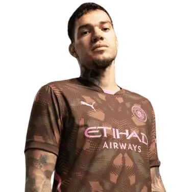 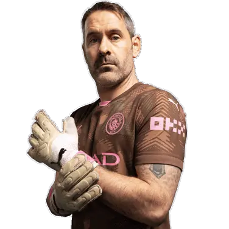 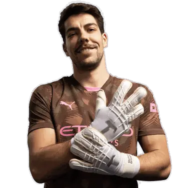
Defender 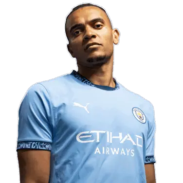 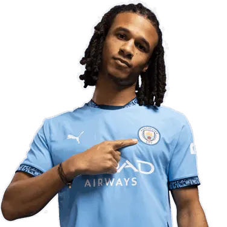 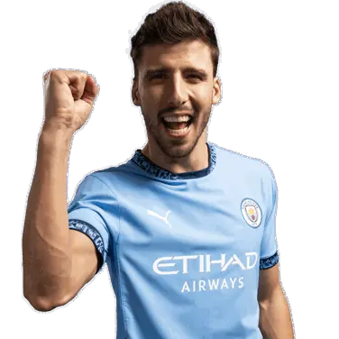 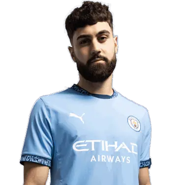 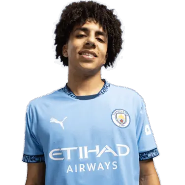 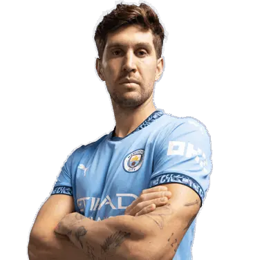 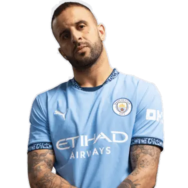 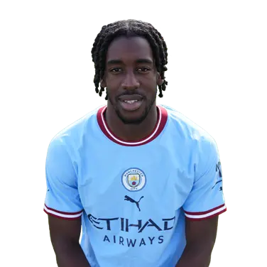
Midfielder 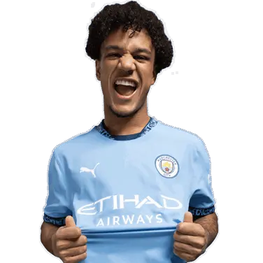 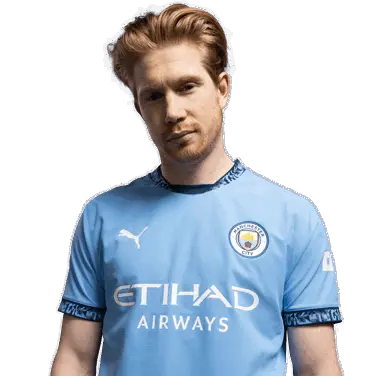 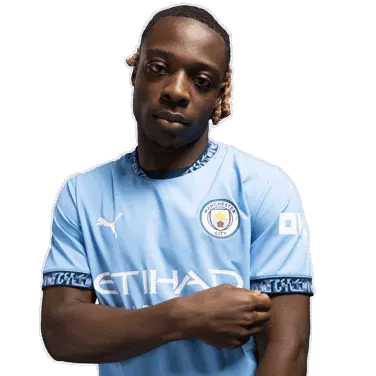
 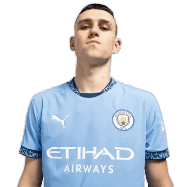
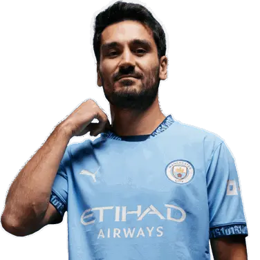
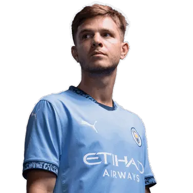
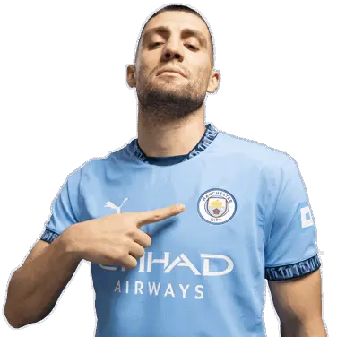
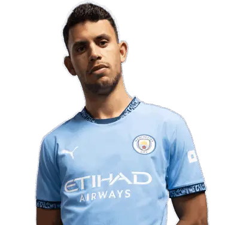
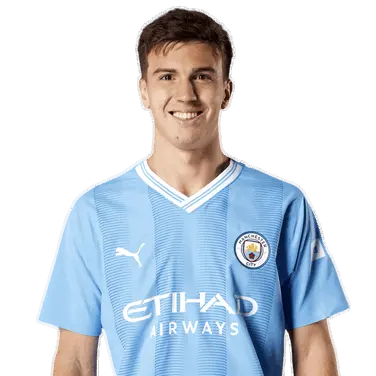
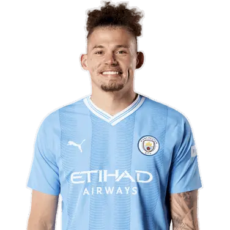
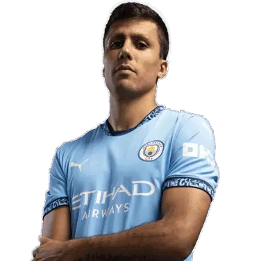
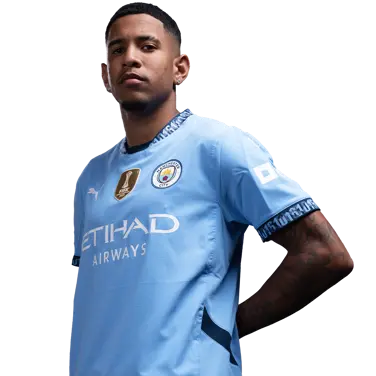
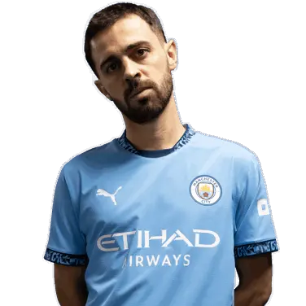
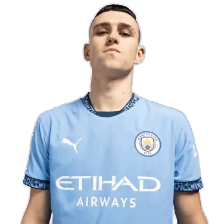
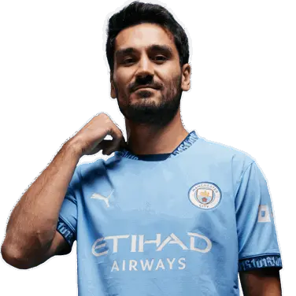
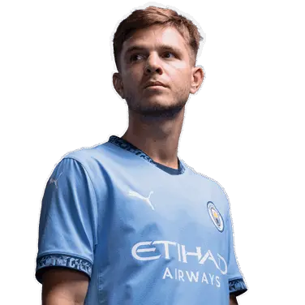
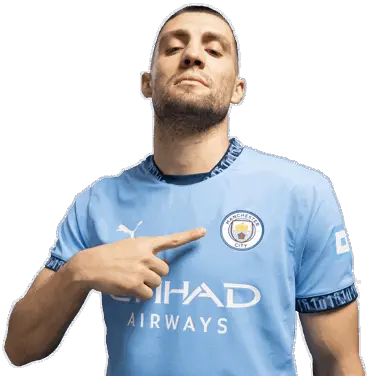
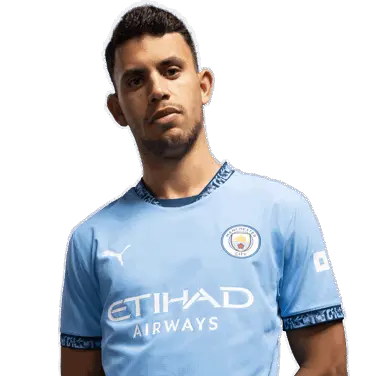
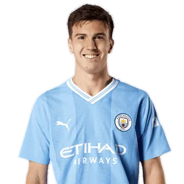
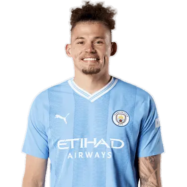
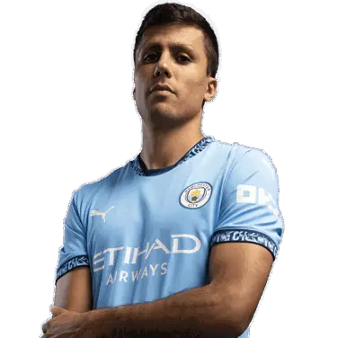
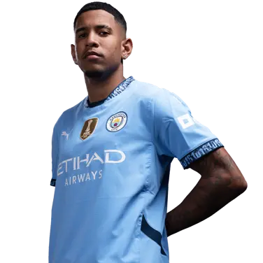
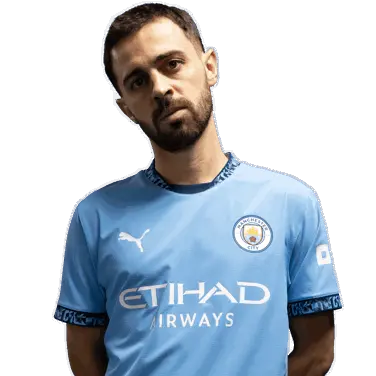
Forward 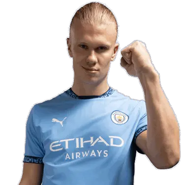
Manager 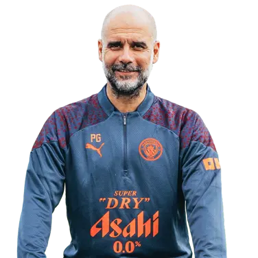